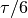

Proofs and Explanations¶
If you just want to get things done without worrying about why the calculations are exactly like they are then you’re in the wrong place, but if you got interested in the math itself you may enjoy reading some of this stuff.
I used a bunch of spooky formulas in this tutorial. Some of them are
definitions of e.g. or  , but in this chapter we’ll focus on those
that aren’t and prove that they actually work.
, but in this chapter we’ll focus on those
that aren’t and prove that they actually work.
Pythagorean Theorem¶
This is a well-known proof and I like it because it’s simple.

We can calculate the total area of the above square in a couple different ways:
- The square’s sides are each
 , so the area must be
, so the area must be  .
. - The square consists of the green square whose area is
 and 4 yellow
triangles with area
and 4 yellow
triangles with area  each. Total area is .
each. Total area is .
We must get the same area with both ways, so we get this equation:

Two ways to define sine and cosine¶
The y axis of the picture at right goes up because this explanation isn’t
really useful for programming; it’s just an explanation for people who are
wondering how and appear both in a unit circle and in triangles.
In the unit circle trig section we defined and
with a unit circle, but then in
the triangle trig section we defined them with a
triangle. If we apply the triangle stuff to the angle  of the picture at
right, we get this:
of the picture at
right, we get this:
The first two formulas are obviously true with any , but the last one is a
bit more interesting. We found another way to define  , and it
also works with a triangle:
, and it
also works with a triangle:

Accurate Sine and Cosine Values¶
Here I said that
and . I’m sorry to disappoint you, but there’s
no general and easy way to find accurate and values by hand.
However, in many cases there’s something special about the angles that allows
us to do some other tricks.
The angle in question is , a sixth of a turn. If a triangle has three sides with equal lengths, the angles will be each. That’s why we can complete the triangle drawn in unit circle like in the image. The angles at top are because two angles added together is .
The radius of the unit circle is 1, so we get this on the  axis:
axis:


Now we can apply the Pythagorean theorem (proved above) to the yellow triangle and figure out :
![\left( \cos \frac \tau 6 \right)^2 + \left( \sin \frac \tau 6 \right)^2 &= 1^2 = 1 \\
\left( \sin \frac \tau 6 \right)^2 &= 1 - \left( \cos \frac \tau 6 \right)^2 \\
\sqrt{\left( \sin \frac \tau 6 \right)^2} &= \sqrt{1 - \left( \cos \frac \tau 6 \right)^2} \\
\left| \sin \frac \tau 6 \right| &= \sqrt{1 - \left( \cos \frac \tau 6 \right)^2} \\
&= \sqrt{1 - \left( \frac 1 2 \right)^2} = \sqrt{1 - \frac{1^2}{2^2}} \\
&= \sqrt{\frac 4 4 - \frac 1 4} = \sqrt{\frac 3 4}
= \frac{\sqrt 3}{\sqrt 4} = \frac{\sqrt 3}{2}](_images/math/7c657da5283bbc4e6c78ef697e19ea3fc2b9eb44.png)
We know that is positive, so .
Which functions have derivatives?¶
In the derivative chapter I said that most functions you’ll come across have a derivative. Let’s be a bit more specific. The derivative doesn’t exist in these cases:

The function is not continuous; that is, the graph consists of multiple lines. For example, this function is not continuous at
 and thus
and thus
 is not defined:
is not defined:

- The graph of the function has a spike in it. Derivatives describe
“growing speed” and it isn’t clear how fast the values grow on top of a
spike. For example, the absolute value
 has a derivative
everywhere except at .
has a derivative
everywhere except at .
Of course, there are more precise definitions about continuity and “spikes”, but this should be enough to give you some kind of idea about the limitations.
Derivative Rules¶
The derivative chapter contains a bunch of rules with no explainations or proofs about how they work. These proofs are ordered so that they don’t use any derivative rules that haven’t been proved before them.
¶
The graph
is a horizontal line, so the slope is zero.
We can also plug into the definition of derivative:


¶
The slope of the line is
because every time
increments
.
Again, we can confirm this with the definition of derivative:


 ¶
¶
This is just like the rule, butand .
 ¶
¶
This rule is particularly handy for differenciating long functions with many things added together. Let’s see what we get with the definition of derivative.
The
rule can be proved in a very similar way.
 ¶
¶
It’s not pretty, but we can use the definition.
![& \frac{d}{dx} (f(x)g(x)) \\
=& \lim_{h\to0} \frac{f(x+h)g(x+h)-f(x)g(x)}{h} \\
=& \lim_{h\to0} \frac{\overbrace{f(x)g(x+h)-f(x)g(x+h)}^\text{this is 0}
+f(x+h)g(x+h)-f(x)g(x)}{h} \\
=& \lim_{h\to0} \frac{f(x+h)g(x+h)-f(x)g(x+h)+f(x)g(x+h)-f(x)g(x)}{h} \\
=& \lim_{h\to0} \frac{(f(x+h)-f(x))g(x+h)+f(x)(g(x+h)-g(x))}{h} \\
=& \lim_{h\to0} \left(
\frac{(f(x+h)-f(x))\ g(x+h)}{h} + \frac{f(x)\ (g(x+h)-g(x))}{h}
\right) \\
=& \lim_{h\to0} \left(
\frac{f(x+h)-f(x)}{h}g(x+h) + f(x)\frac{g(x+h)-g(x)}{h}
\right) \\
=& \lim_{h\to0} \left(\frac{f(x+h)-f(x)}{h}g(x+h)\right)
+ \lim_{h\to0}\left(f(x)\frac{g(x+h)-g(x)}{h}\right) \\
=& \left(\lim_{h\to0}\frac{f(x+h)-f(x)}{h}\right)
\left(\lim_{h\to0}g(x+h)\right)
+ f(x) \left(\lim_{h\to0}\frac{g(x+h)-g(x)}{h}\right) \\
=& f'(x)g(x) + f(x)g'(x)](_images/math/94ce70e8b81fbf05da94cd5b01fc4f42492f691e.png)
¶
It’s easy to prove that this works for an individual
Let’s start by showing that this works with e.g.
Next we’ll prove that if the rule works at
then it also works at
where is a positive integer. Let’s write things down just to be clear:
We assume: We’ll prove: Let’s use the
and
rules we proved above and the assumption.
We proved that if then
. Now we know that the rule works when
we know it works when
, and so on.
Note that we only proved that the rule works when
. It’s possible to prove that the rule isn’t limited to positive integers, but that’s beyond the scope of this tutorial.


¶
We could prove this with the
rule because
, but we proved the
rule only for positive integers. Let’s survive without it. Again, it’s a mess, but it works.
![\frac{d}{dx} \sqrt x
&= \lim_{h\to0} \frac{\sqrt{x+h}-\sqrt x}{h} \\
&= \lim_{h\to0} \frac{(\sqrt{x+h}-\sqrt x)(\sqrt{x+h}+\sqrt x)}{
h \cdot (\sqrt{x+h} + \sqrt x)} \\
&= \lim_{h\to0} \frac{(\sqrt{x+h}-\sqrt x)\sqrt{x+h}
+(\sqrt{x+h}-\sqrt x)\sqrt x}{h \cdot (\sqrt{x+h} + \sqrt x)} \\
&= \lim_{h\to0} \frac{\sqrt{x+h}\sqrt{x+h}
\overbrace{-\sqrt x\sqrt{x+h}+\sqrt{x+h}\sqrt x}^\text{this is 0}
- \sqrt x\sqrt x}{h \cdot (\sqrt{x+h} + \sqrt x)} \\
&= \lim_{h\to0} \frac{\left(\sqrt{x+h}\right)^2 - \left(\sqrt x\right)^2}{
h \cdot (\sqrt{x+h} + \sqrt x)} \\
&= \lim_{h\to0} \frac{(x+h)-x}{h\cdot(\sqrt{x+h} + \sqrt x)} \\
&= \lim_{h\to0} \frac{h}{h\cdot(\sqrt{x+h} + \sqrt x)} \\
&= \lim_{h\to0} \frac{1}{\sqrt{x+h} + \sqrt x} \\
&= \frac{1}{\sqrt x + \sqrt x} \\
&= \frac{1}{2\ \sqrt x}](_images/math/fe4d26ab4a0714e08f0b5bdc085fd418f53ee65e.png)
¶
We could use the
 ¶
¶
This rule looks simple, but it’s surprisingly difficult to prove correctly while keeping it easy to read. Here’s the best proof I managed to make.
Let’s start by plugging stuff into the definition of derivative:
Note that I used
with one limit and with the other; the limits are completely independent of each other and I wanted to make it stand out. In other words, it doesn’t matter how
The rule can be used only if
exists, and thus
must be continuous; see the derivative existence stuff above. So, if (read: h approaches 0) then and .
If we put all this together we can set
. Now it’s time to calculate .
This looks nice, but we are not done yet! We divided by . What if when but
? Practically it means that the graph
is a horizontal and straight line around
with a small
on this interval (
Look carefully: because we differenciated
with respect to


![& f'(g(x))g'(x) \\
=& \lim_{k\to0} \frac{f(g(x)+k)-f(g(x))}{k} \cdot \lim_{h\to0} \frac{g(x+h)-g(x)}{h} \\
=& \lim_{k\to0} \lim_{h\to0} \left(
\frac{f(g(x)+k)-f(g(x))}{k} \cdot \frac{g(x+h)-g(x)}{h}
\right) \\
=& \lim_{h\to0} \left(
\frac{f(g(x)+g(x+h)-g(x))-f(g(x))}{g(x+h)-g(x)}
\cdot \frac{g(x+h)-g(x)}{h}
\right) \\
=& \lim_{h\to0} \frac{f(g(x)+g(x+h)-g(x))-f(g(x))}{h} \\
=& \lim_{h\to0} \frac{f(g(x)-g(x)+g(x+h))-f(g(x))}{h} \\
=& \lim_{h\to0} \frac{f(g(x+h))-f(g(x))}{h} \\
=& \frac{d}{dx} (f(g(x))](_images/math/35713a9f073efea34d98baed92a476f7bc9101a9.png)
 ¶
¶
We need these rules that are proved above:
Now this is quite straight-forward.